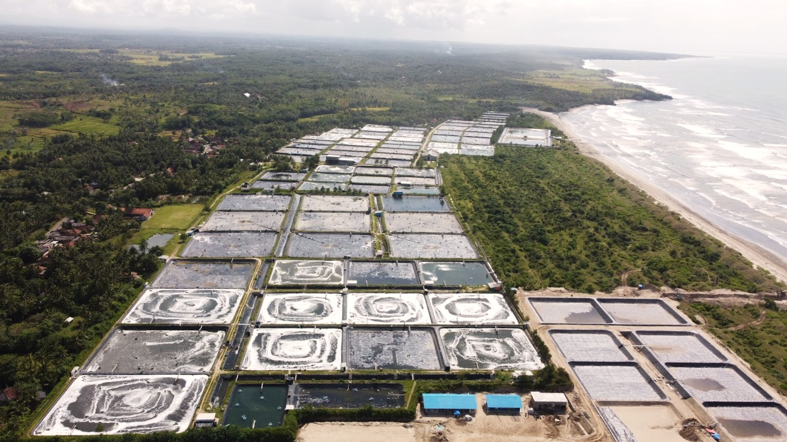
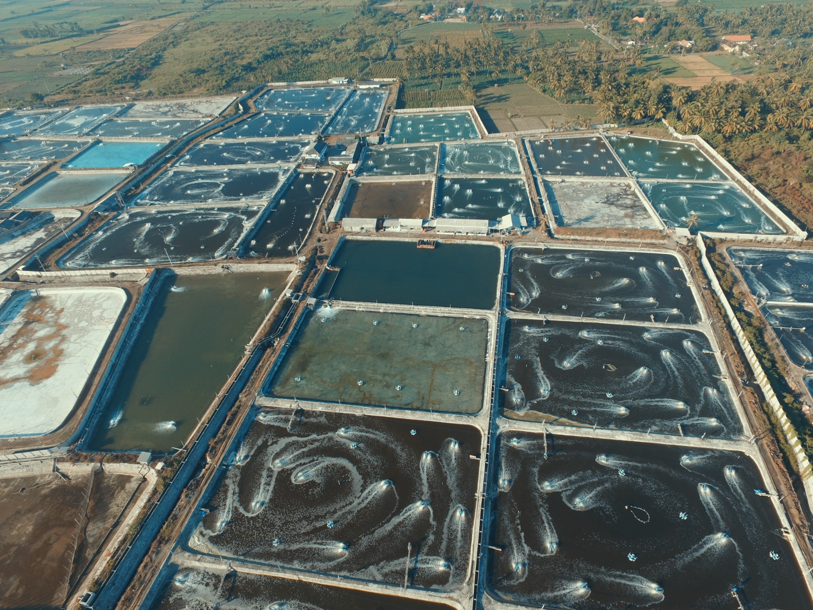
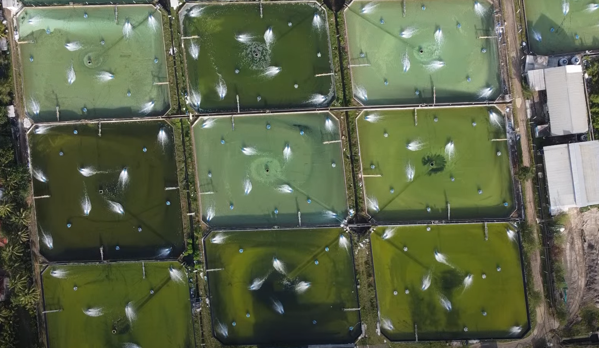
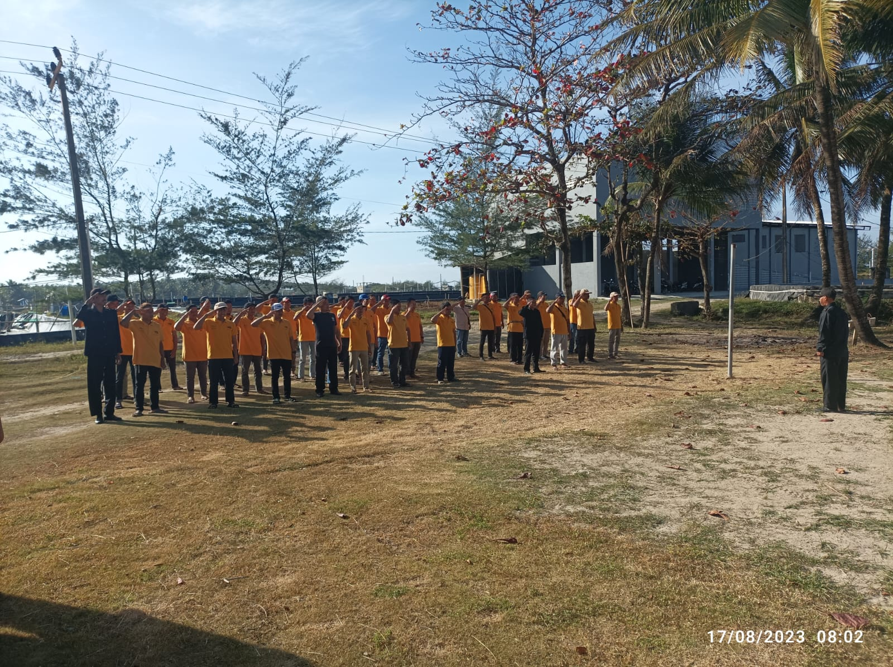
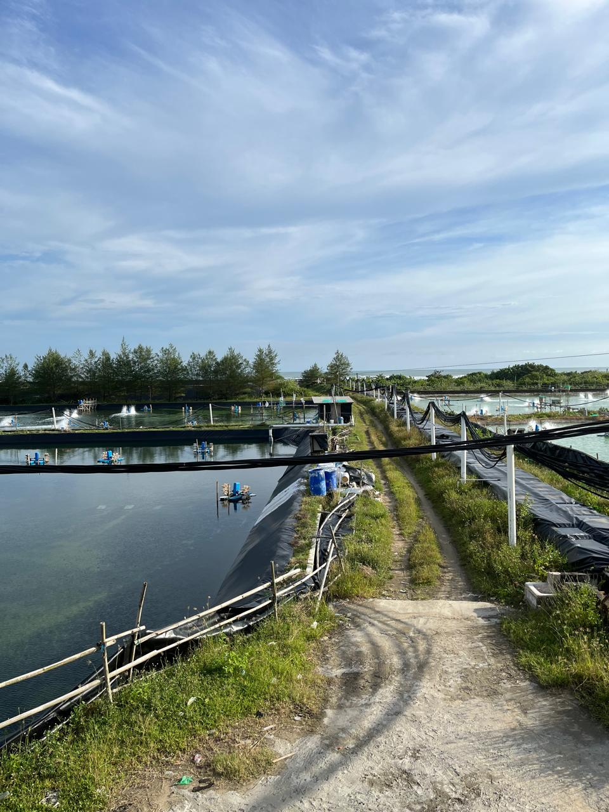

Noerwy Aqua Farm is a sustainable shrimp aquaculture and trading company that handles high-quality shrimps and makes it accessible to both the local and global market.
The principles that guide our decisions, shape our culture, and
define how we operate every day.
Committed to nurturing our ecosystems, partnerships, and resources to support sustainable growth and long-term productivity.
Operating with responsibility and transparency in every decision to ensure trust, quality, and ethical practices.
Focused on innovative and forward-thinking solutions to build a sustainable and resilient future for our industry.
Vision and Mission
To become a globally integrated
aquaculture company.
Our operations are strategically located to support efficient production while maintaining strong environmental and community standards.


We are committed to operate responsibly at every level, be it looking after the commodity, to the environment, and supporting our communities.


One thing we do to support sustainable communities is to prioritize hiring local workers in the rural areas where we operate. By providing meaningful employment opportunities, we help strengthen local economies and develop essential skills within the community. We believe that empowering local talent not only contributes to inclusive growth but also fosters a committed workforce, ensuring the continued success and high-quality production of our business for years to come.
Our initiatives are guided by the Sustainable Development Goals, ensuring responsible practices that support people, communities, and the environment.


